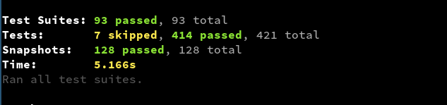

kris-mikael.krister@miles.no
Testing React components is cumbersome and boring
const wrapper = render(<MyComponent/>); const elems = wrapper.find('div > div > table tr')); expect(elems).to.have.length(3);
Maintaining UI tests is too demanding
Jest is a test runner
... an assertion library